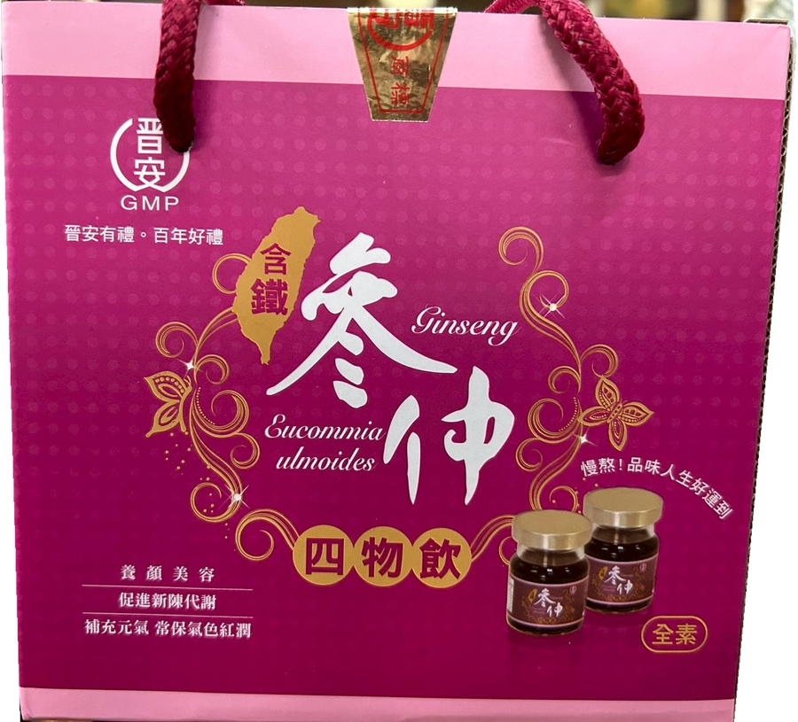
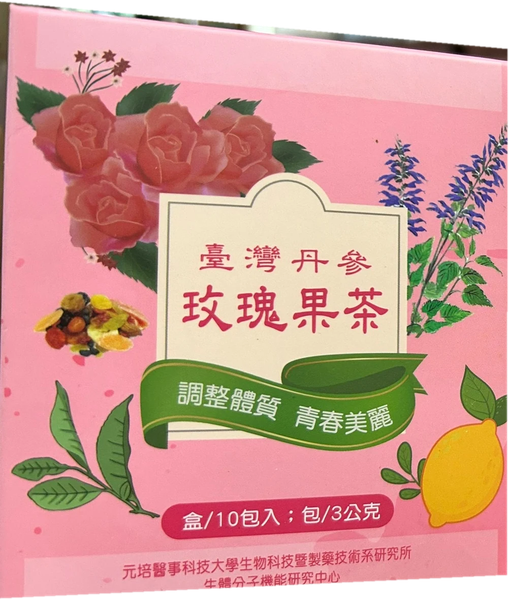
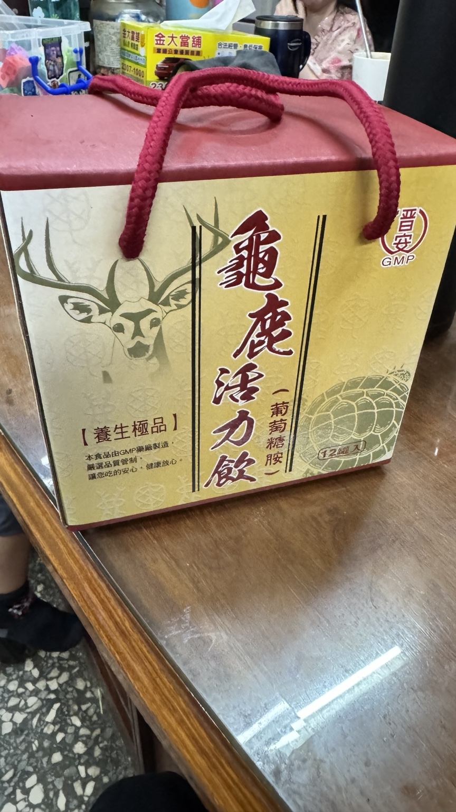
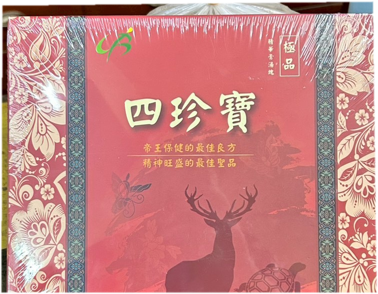

飲食文化
從溫熱飲食與燉煮文化延續
龜鹿相關飲食有長久的傳統脈絡；今天可以用更清楚的成分、規格與料理方式重新理解。
 龜鹿膏
龜鹿膏
 龜鹿飲30cc玻璃罐
龜鹿飲30cc玻璃罐
 龜鹿飲180cc鋁袋
龜鹿飲180cc鋁袋
 鹿茸粉
鹿茸粉

參仲四物飲
丹參茶包系列
龜鹿活力飲（葡萄糖胺）
四珍寶精華膏湯塊 二珍寶精華膏湯塊
二珍寶精華膏湯塊
龜鹿入門
不從疾病或症狀出發，先從飲食文化、產品型態與生活方式理解龜鹿，會更容易知道自己想了解的是哪一種形式。
飲食文化
龜鹿相關飲食有長久的傳統脈絡；今天可以用更清楚的成分、規格與料理方式重新理解。
現代形式
仙加味目前提供龜鹿膏與龜鹿飲，讓不同生活節奏的人可以用不同方式接觸同一套飲食文化。
怎麼挑
份量、攜帶、是否加熱、保存與料理習慣，往往比先背產品名稱更容易做選擇。
怎麼選
先想想自己平常最順手的使用方式，再往下比較容量與產品型態。
固定安排
習慣固定安排，可先從100g／罐的龜鹿膏了解。
方便即飲
外出、工作空檔或希望準備步驟少，可比較30cc小玻璃罐與180cc鋁袋。
自行搭配
習慣自己安排溫熱飲品，可查看75g／罐與一般使用方式。
日常使用
需要更多協助？
官網負責把品牌、產品與使用方式整理清楚；試喝、價格、購買、配送、批發與合作，由官方 LINE 一對一接續。